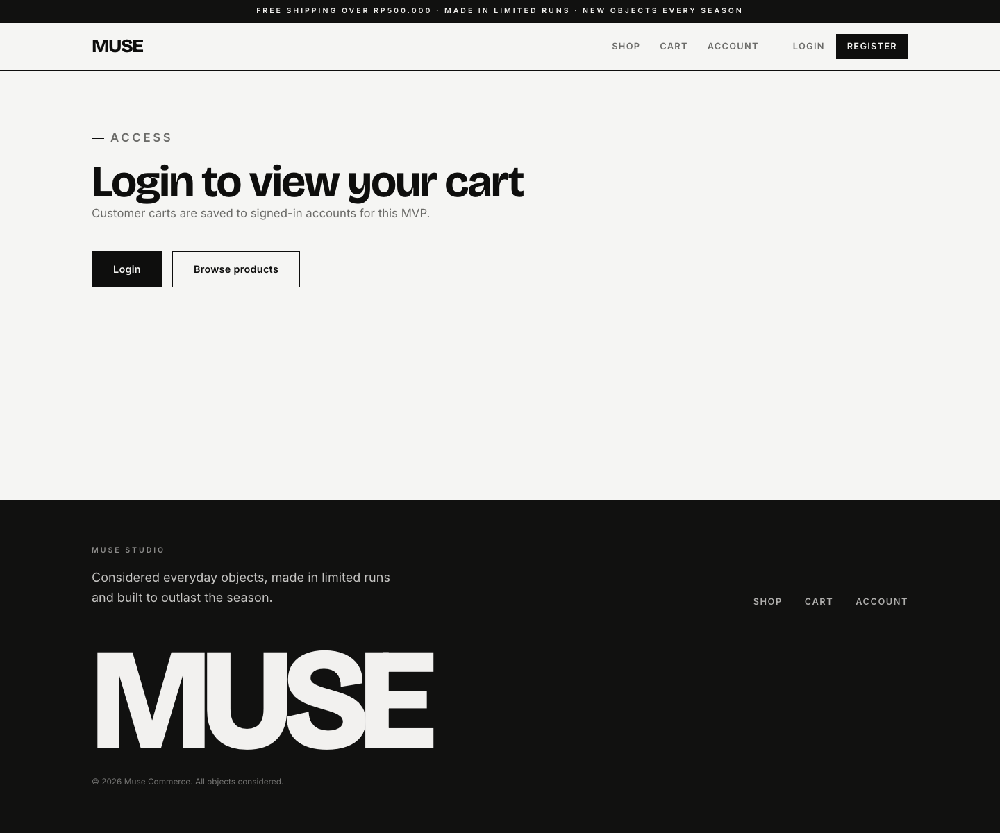
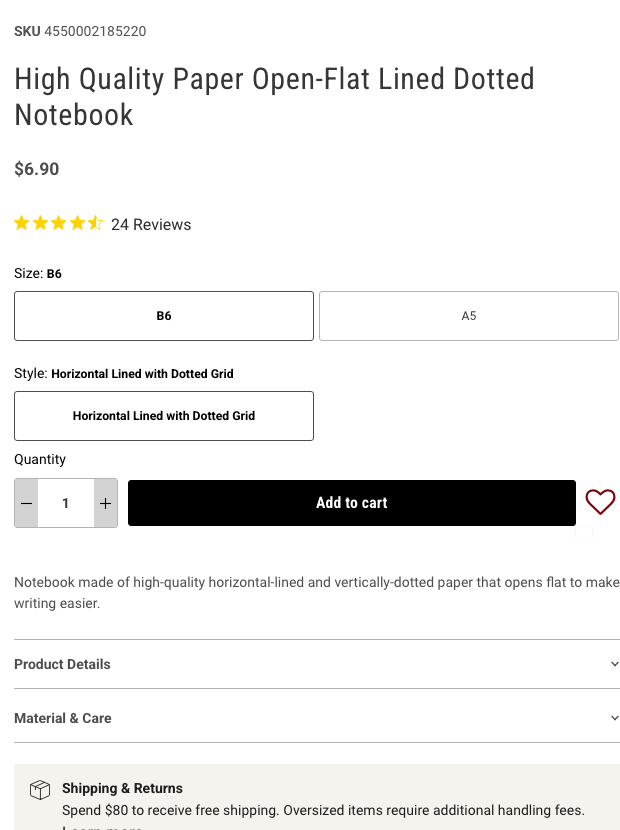
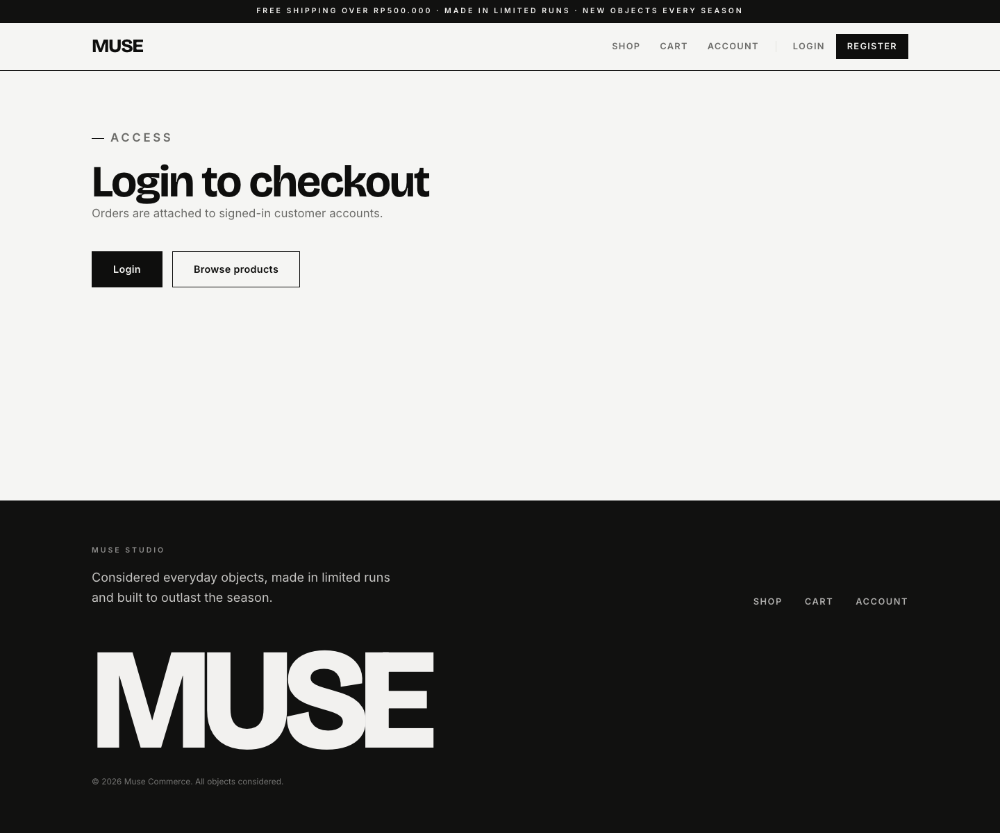

Checkout Path Requirement
Bring cart, checkout, and payment into the same quiet retail system: table-like line items, compact quantity controls, clear order summary, restrained form sections, coupon feedback, and payment status panels.
No dedicated MUJI cart/checkout screenshot was captured in this pass. This spec uses the MUJI purchase panel, global footer, and form/control density as the reference for checkout controls.
Current Cart And MUJI Control Reference

Current Checkout And MUJI Form Reference


Differences To Resolve
| Area | Current MUSE | Reference behavior | Required MUSE change |
|---|---|---|---|
| Access states | Large content page with primary/secondary action row. | Quiet utility state inside the retail shell. | Restyle AccessRequired to be compact and page-specific. |
| Cart rows | Route supports cards with image, details, quantity form, remove, line total. | Rows should be table-like, scannable, and compact. | Build CartLineItem with shared QuantityStepper. |
| Summary | cart-summary exists and can become sticky. |
Totals and CTA should be visually quiet but obvious. | Extract OrderSummary for cart, checkout, and payment. |
| Checkout forms | Form sections are route-local cards with many fields. | Thin-border sections, compact labels, stable two-column grids. | Build shared CheckoutFormSection and PublicTextField. |
| Coupon | CouponFeedback exists only in checkout route. |
Small inline feedback near field. | Extract CouponField with consistent success/error text. |
| Payment | Separate payment route with status and retry behavior. | Payment state should read like an order action panel. | Build PaymentStatusPanel and reuse OrderSummary. |
Component Requirements With Crops
QuantityStepper
Shared minus/input/plus control for PDP and cart item quantity updates.
- Already have
- PDP number input and cart quantity form.
- Get rid
- Plain number field as the only visible control.
- Need
- Min/max, disabled state, submit integration, no layout shift.

CartLineItem
Compact row with thumbnail, product name, variant/options, availability warning, quantity, remove, line total.
- Already have
- Cart item data and all mutation handlers.
- Get rid
- Route-local cart article markup.
- Need
- Shared row component with mobile stack and desktop table alignment.
OrderSummary
Reusable summary for subtotal, discount, shipping, total, warnings, and next action.
- Already have
cart-summaryandcheckout-summary.- Get rid
- Duplicated summary markup across cart/checkout/payment.
- Need
- Slot for CTA, warning, coupon, and payment status.
CheckoutFormSection
Thin-border section wrapper for contact, saved address, shipping address, notes, and payment actions.
- Already have
checkout-card,AddressFields, contact fields.- Get rid
- Heavy card feel and inconsistent route-local field groups.
- Need
- Shared label/input/select/textarea primitives.
CouponField
Compact coupon input with small validation feedback and uppercase transform.
- Already have
CouponFeedbackand coupon state in checkout.- Get rid
- Coupon logic embedded directly in checkout route JSX.
- Need
- Reusable field component and preview feedback slot.
PaymentStatusPanel
Payment state, retry/open invoice action, status message, and order metadata.
- Already have
- Payment route status helpers and invoice action.
- Get rid
- Route-local status panel markup if it grows.
- Need
- Shared style for failed, expired, paid, pending, and retry states.
Current Components Inventory
| Current piece | Status | Action |
|---|---|---|
Cart |
Keep | Keep query/mutations; extract line item and summary UI. |
Checkout |
Keep | Keep form state and submit flow; extract field sections and summary. |
AddressFields |
Keep/extract | Move to shared checkout component if reused or if route grows. |
CouponFeedback |
Extract | Pair with CouponField. |
Payment |
Keep | Keep payment status helpers; compose PaymentStatusPanel and OrderSummary. |
AccessRequired |
Keep/restyle | Make signed-out cart/checkout states compact and consistent with shell. |
Data And Build Notes
Data We Have
Cart items, snapshots, variant options, stock validation, addresses, coupon preview, order/payment status.
Data We Need
Shipping method selection, shipping cost rules, guest checkout decision, more payment method display detail.
Simple First Pass
Restyle existing authenticated and unauthenticated states before changing checkout behavior.